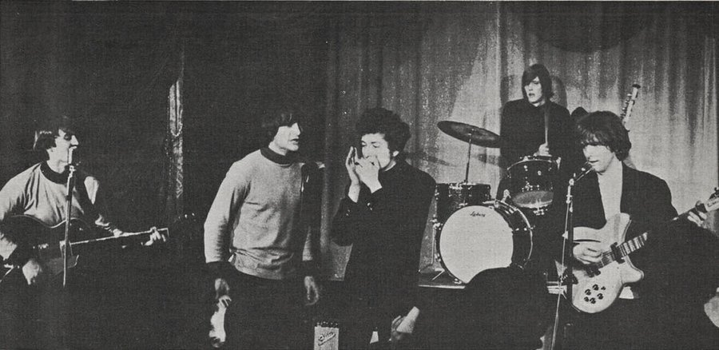

The Byrds were a Los Angeles band, formed in 1964, who plugged Bob Dylan's songs into Beatles-style electric rock and pioneered folk rock.
Their cover of "Mr. Tambourine Man" hit No. 1 in America and Britain in 1965.
Over the next three years they helped start psychedelic rock, then country rock.

Table of Contents
- How the Band Formed
- Mr. Tambourine Man and the Birth of Folk Rock
- Eight Miles High and Psychedelia
- 1967: Rock 'n' Roll Stars and Departures
- Sweetheart of the Rodeo and Country Rock
- Members
- After 1968 and Legacy
- FAQ
How the Byrds Formed
The band began at the Troubadour folk club in Los Angeles in 1964.
Jim McGuinn and Gene Clark met there, and David Crosby soon joined them to sing harmonies.
All three were veterans of the folk boom, from the Chad Mitchell Trio, the New Christy Minstrels and Les Baxter's Balladeers.
They called themselves the Jet Set.
Drummer Michael Clarke joined in mid-1964.
Chris Hillman, a bluegrass mandolin player, took over on bass in October.
After seeing A Hard Day's Night, McGuinn bought a Rickenbacker twelve-string, and its chiming ring became their signature.
From the Beefeaters to Columbia
Elektra released one flop single under the name the Beefeaters on October 7, 1964.
The group signed with Columbia Records on November 10.
Over Thanksgiving dinner they became the Byrds, misspelled in the Beatles' manner.
Mr. Tambourine Man and the Birth of Folk Rock
Manager Jim Dickson had an acetate of an unreleased Bob Dylan song, "Mr. Tambourine Man."
The band recorded it on January 20, 1965, with producer Terry Melcher.
Session players including drummer Hal Blaine cut the backing track.
McGuinn was the only member who played on it.
On March 21 the band began a residency at Ciro's on the Sunset Strip.
Five nights later, Dylan himself joined them on stage.
Columbia released the single on April 12, 1965.
Within three months it was No. 1 on the Billboard Hot 100, and it topped the UK chart too.
Folk Rock Gets a Name
The American music press coined the term "folk rock" in June 1965 to describe their sound, as our folk rock guide explains.
McGuinn later put it simply: "It was Dylan meets the Beatles."
The debut album reached No. 6, and another Dylan cover, "All I Really Want to Do," went to No. 4 in Britain.
Their second No. 1 came from Pete Seeger, who took the words of "Turn! Turn! Turn!" almost entirely from the Book of Ecclesiastes.
It reached the top on December 4, as the 1965 year guide shows.
Eight Miles High and Psychedelia
In February 1966, Clark had a panic attack on a flight to New York and refused to fly.
McGuinn told him, "If you can't fly, you can't be a Byrd."
Clark left, and the group carried on as a quartet.
"Eight Miles High," written by Clark, McGuinn and Crosby, came out in the spring of 1966.
McGuinn's twelve-string lines imitate the saxophone of John Coltrane, over a drone borrowed from Ravi Shankar's Indian ragas.
Many US stations banned it after the Gavin Report said it promoted drugs, though the band said it was about a flight to London.
It still reached No. 14 and is often called one of the first psychedelic rock records.
1967: Rock 'n' Roll Stars and Departures
Younger Than Yesterday arrived on February 6, 1967.
Its sarcastic single "So You Want to Be a Rock 'n' Roll Star" reached No. 29.
By mid-year McGuinn had changed his first name from Jim to Roger, through the Subud spiritual movement.
At the Monterey Pop Festival on June 17, Crosby filled the gaps between songs with speeches about the Kennedy assassination.
McGuinn and Hillman fired Crosby in October, a year the 1967 year guide covers in full.
The Byrds' Greatest Hits, out in August, reached No. 6 and later went platinum.
Sweetheart of the Rodeo and Country Rock
In early 1968 McGuinn and Hillman rebuilt the band with Hillman's cousin Kevin Kelley on drums and singer Gram Parsons, who steered them toward country music.
At the Grand Ole Opry on March 15, 1968, the crowd heckled them with mocking calls of "tweet, tweet."
Sweetheart of the Rodeo came out on August 30, 1968, and peaked at only No. 77.
It is now seen as a founding country rock album.
Parsons had already quit in July, refusing to tour segregated South Africa.
Hillman left in September, and the two formed the Flying Burrito Brothers.
The 1968 year guide puts the album in context.
Press Play on any row below to hear the band's charting 1960s singles.
| Play | |||
|---|---|---|---|
| "Mr. Tambourine Man" | 1965 | Hot 100 No. 1 | |
| "All I Really Want to Do" | 1965 | Hot 100 No. 40 | |
| "Turn! Turn! Turn!" | 1965 | Hot 100 No. 1 | |
| "Eight Miles High" | 1966 | Hot 100 No. 14 | |
| "5D (Fifth Dimension)" | 1966 | Hot 100 No. 44 | |
| "Mr. Spaceman" | 1966 | Hot 100 No. 36 | |
| "So You Want to Be a Rock 'n' Roll Star" | 1967 | Hot 100 No. 29 | |
| "My Back Pages" | 1967 | Hot 100 No. 30 | |
| "You Ain't Goin' Nowhere" | 1968 | Hot 100 No. 74 |
The Byrds Members
The original five were Roger McGuinn on lead guitar, Gene Clark on vocals and tambourine, David Crosby on rhythm guitar, Chris Hillman on bass and Michael Clarke on drums.
Later members included Gram Parsons, Kevin Kelley, guitarist Clarence White, drummer Gene Parsons and bassists John York and Skip Battin.
McGuinn was the only member who played in every lineup.
After 1968 and Legacy
McGuinn kept the name going with bluegrass guitarist Clarence White.
"Ballad of Easy Rider," the theme for the 1969 film Easy Rider, named their November 1969 album.
After that lineup ended in February 1973, the original five cut one reunion album, Byrds.
- 1991: the original five entered the Rock and Roll Hall of Fame, presented by Don Henley, and played together one last time
- 2004: Rolling Stone ranked them No. 45 among the 100 Greatest Artists of All Time
- 2006: they joined the Vocal Group Hall of Fame
Their jangling guitars echo through the Eagles, Tom Petty and the Heartbreakers, R.E.M. and the Smiths.
FAQ
Who were the original members of the Byrds?
Roger McGuinn, Gene Clark, David Crosby, Chris Hillman and Michael Clarke.
Did the Byrds play on Mr. Tambourine Man?
Only Roger McGuinn played on it.
Session musicians including Hal Blaine cut the backing track.
Why did Gene Clark leave the band?
He refused to fly after a panic attack on a plane in February 1966.
Why did the Byrds break up?
Constant lineup changes wore the band down, and McGuinn dissolved his last lineup in February 1973.
The full story is on Wikipedia, and Dylan's side is in our Bob Dylan biography.
Few American bands shaped where rock went after 1965 as much as the Byrds.
Back to the 1960smusic.net homepage to explore every genre of the decade.